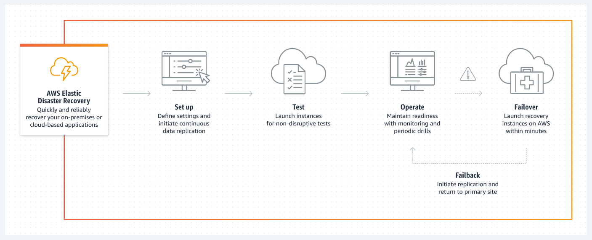

Beschreibung
AWS Elastic Disaster Recovery (AWS DRS) ist ein maßgeschneiderter Dienst, der darauf abzielt, Ausfallzeiten und Datenverluste zu minimieren, indem er eine schnelle und zuverlässige Wiederherstellung von sowohl lokalen als auch cloudbasierten Anwendungen ermöglicht.
Dieser Dienst stellt eine essenzielle Komponente für die Notfallwiederherstellungsstrategie von Unternehmen dar und bietet eine Reihe von Schlüsselfunktionen, die für eine effektive Disaster-Recovery-Planung unerlässlich sind.
* Schnelle Wiederherstellung:
AWS DRS zeichnet sich durch eine zügige Wiederherstellung von Anwendungen aus, sowohl lokal als auch in der Cloud. Diese schnelle Wiederherstellung minimiert Ausfallzeiten und ermöglicht es Unternehmen, den Geschäftsbetrieb schnellstmöglich wieder aufzunehmen, selbst nach schwerwiegenden Störungen.
* Zuverlässigkeit:
Der Dienst garantiert eine zuverlässige Wiederherstellung von Anwendungen, was dazu beiträgt, Datenverluste zu minimieren und die Integrität der Daten zu gewährleisten. Die Zuverlässigkeit von AWS DRS ist entscheidend, um sicherzustellen, dass geschäftskritische Informationen jederzeit verfügbar sind.
* Erschwinglicher Speicher:
AWS DRS nutzt kostengünstigen Speicher, um die Gesamtkosten der Disaster-Recovery zu reduzieren, ohne dabei Kompromisse bei der Leistung einzugehen. Dies ermöglicht es Unternehmen, ihre Notfallwiederherstellungsstrategie kosteneffizient zu gestalten und gleichzeitig eine hohe Qualität zu gewährleisten.
* Minimale Rechenressourcen:
Der Rechenaufwand für die Disaster-Recovery wird auf ein Minimum reduziert, was zu effizienten und kosteneffektiven Prozessen führt. Durch die Optimierung der Rechenressourcen können Unternehmen Ressourcen effektiver nutzen und gleichzeitig die Wiederherstellungszeiten minimieren.
* Point-in-Time-Wiederherstellung:
Die Fähigkeit zur Point-in-Time-Wiederherstellung ist eine wichtige Funktion von AWS DRS. Sie ermöglicht es, Systeme zu einem vorherigen Zeitpunkt wiederherzustellen, was besonders wichtig ist, um konsistente Daten wiederherzustellen und einen nahtlosen Betrieb zu gewährleisten.
Durch die Kombination dieser Merkmale bietet AWS Elastic Disaster Recovery Unternehmen die Möglichkeit, sich effektiv gegen unvorhergesehene Ereignisse abzusichern und die Kontinuität ihrer geschäftskritischen Anwendungen sicherzustellen.
Damit trägt der Dienst wesentlich dazu bei, die Resilienz von Unternehmen zu stärken und das Risiko von Geschäftsunterbrechungen aufgrund von Ausfällen oder Katastrophen zu minimieren
Schlüsselwörter
> > > Schlüsselworte bzw. Schlagworte sollen uns dabei helfen, einen Service leichter zu erkennen, wenn es um Prüfungsfragen geht. Ließ dir die Fragen richtig durch und achte auf folgende Schlüsselworte. Sie können dir bei der Beantwortung der Fragen helfen.
- Dateisysteme: Amazon EFS ermöglicht die Erstellung von skalierbaren und elastischen Dateisystemen, die von mehreren EC2-Instanzen gleichzeitig genutzt werden können.
- Network File System (NFS): EFS basiert auf dem NFS-Protokoll und bietet dadurch eine standardisierte und weit verbreitete Schnittstelle für den Dateizugriff.
- Regionale Verwendung: EFS ist in der Lage, in einer AWS-Region über mehrere Verfügbarkeitszonen hinweg bereitzustellen, um Hochverfügbarkeit und Zuverlässigkeit sicherzustellen.
- Elasticity: EFS passt sich automatisch an die Größe der gespeicherten Daten an, ohne dass manuelle Anpassungen erforderlich sind.
- Performance: EFS bietet skalierbare Leistung, die mit der Anzahl der verwendeten Dateisysteme und der Datenmenge skaliert.
- Zugriffskontrolle: AWS Identity and Access Management (IAM) kann verwendet werden, um den Zugriff auf Amazon EFS zu steuern.
- Encryption: EFS bietet die Möglichkeit, Daten im Ruhezustand mit AWS Key Management Service (KMS) zu verschlüsseln.
- Infrequent Access (IA) Storage Class: Die Möglichkeit, Infrequent Access Storage Class zu verwenden, um Kosten für selten genutzte Daten zu reduzieren.
- Lifecycle Management: Automatisches Verwalten der Kosten durch Verwendung von Lifecycle-Managementrichtlinien für Dateisysteme.
- Mount Targets: Konfigurierbare Mount Targets in den Verfügbarkeitszonen, um den Zugriff auf EFS in verschiedenen Zonen zu ermöglichen.
- AWS Backup Integration: Integration mit AWS Backup zur Sicherung und Wiederherstellung von Amazon EFS-Dateisystemen.
- AWS CloudFormation Integration: EFS kann über AWS CloudFormation verwaltet und bereitgestellt werden.
- File Sync: AWS DataSync kann für die schnelle und sichere Übertragung großer Datenmengen zwischen lokalen Speicherorten und Amazon EFS verwendet werden.
Grafische Erklärung
Prüfung Fragen
- Welche AWS-Services und -Funktionen können Unternehmen bei der Implementierung einer robusten Disaster-Recovery-Strategie unterstützen?
- Welche Best Practices sollten Unternehmen beachten, um eine effektive Disaster-Recovery-Strategie in der AWS-Cloud zu implementieren?
- Welcher AWS-Service ermöglicht es Unternehmen, automatisierte Disaster-Recovery-Prozesse zu erstellen und zu verwalten, um die Wiederherstellungszeit zu minimieren?